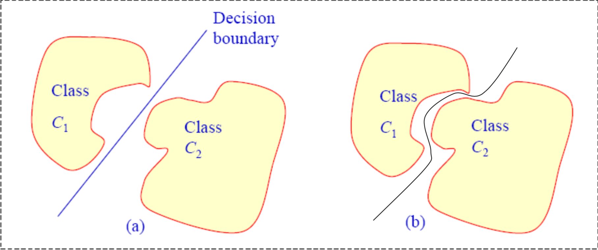

In this chapter, we will look into how we can calculate the weights ( If you have not read the history about the perceptron check out that first 🔖 )
In general, there are two ways in which we can select ways
- Offline calculation of weights: This is a simple method, based on the equations that we can form using the input values and output values we randomly choose numbers that will solve the equations that we formed
- Learning procedure: The weight vector is calculated based on a given set of input-output vectors, and the weight vectors calculated will be the best classifier of the input data
Before diving deeper into the learning procedure which seems very intriguing, we need to know a new term called “Linearly Separable”
If two classes can be separated by one line( or a plane or hyper plane in higher dimensional space) then the two classes are linearly separable. In other words, there should exist a weight vector which can classify the inputs into two different classes.
Interestingly, if the equation of the hyperplane is given we can construct the perceptron from that.
- Try to find out the equation for the hyper-plane and put it in the following form
- Then the corresponding perceptron can be easily constructed.
w1x1 + w2x2+ …..+wmxm+ b = 0
If the input dataset is not linearly separable then no simple perceptron can be constructed to achieve the classification task.😑
For lower-dimensional inputs, it is easy to visualise it as a graph and do offline methods but in real-time, the dimensions of the problems will be in the range of 100. Then how do we calculate for higher dimensions? In 1958 Rosenblatt proved that perceptron can learn and calculate the weights using trial and error method 😲
Are you ready for some mathematical proofs ?? 🤯 stay tuned…….